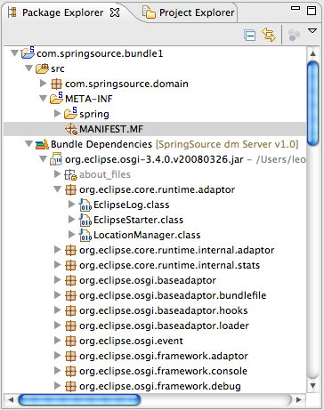

While working with OSGi bundles, one of the most interesting and challenging aspects is defining
the package, bundle, and library imports in the manifest and then keeping this in sync
with your compile classpath either in Ant and Maven or Eclipse. In most cases you would typically
be required to manually set up the Eclipse classpath. Ultimately, the Eclipse compile
classpath is still different from the bundle runtime classpath, as normally an entire
JAR file is being made available on the Eclipse classpath but not necessarily at runtime
due to the explicit visibility rules defined in Import-Package headers.
The dm Server Tools address this problem by providing an Eclipse classpath container that
uses a dm Server specific dependency resolution mechanism. This classpath
container makes resolved dependencies available on the project's classpath but allows
only access to those package that are imported explicitly (e.g., via Import-Package)
or implicitly by using Import-Library or Import-Bundle.
To use the automatic dependency resolution, an OSGi bundle or PAR project needs to be targeted to a configured SpringSource dm Server instance. This can be done from the project's preferences by selecting the runtime on the "Targeted Runtimes" preference page.
![[Note]](../images/information.gif) | Note |
|---|---|
| In most scenarios it is sufficient to target the PAR project to a runtime. The nested bundles will then automatically inherit this setting. |

After targeting the project or PAR you will see a "Bundle Dependencies" classpath container in your Java project. It is now safe to remove any manually configured classpath entries.
The classpath container will automatically attach Java source code to the classpath entries by looking for source JARs next to the binary JARs in the SpringSource dm Server's repository. You can also manually override the source code attachment by using the properties dialog on a single JAR entry. This manual attachment will always override the convention-based attachment.